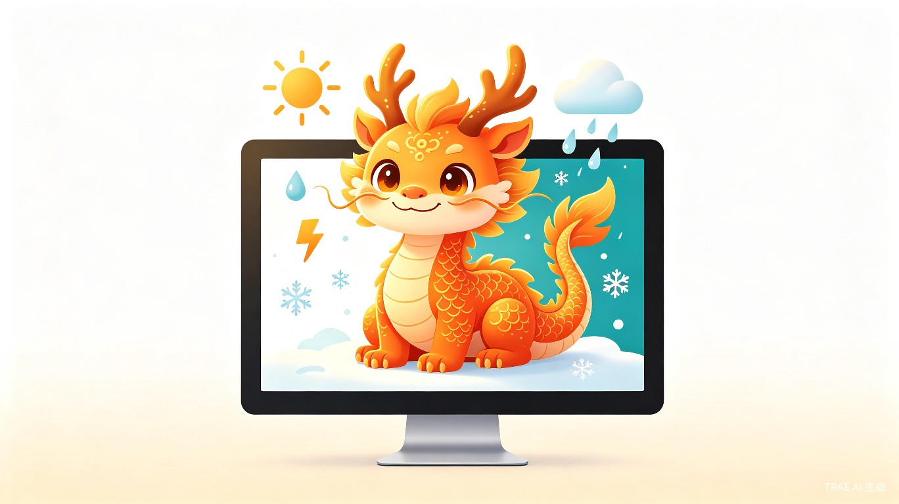
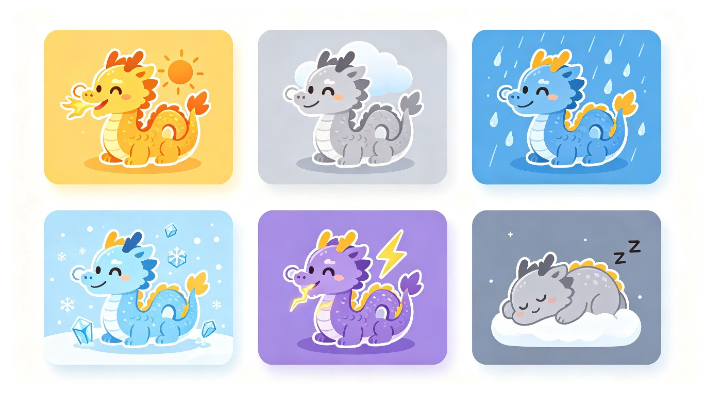
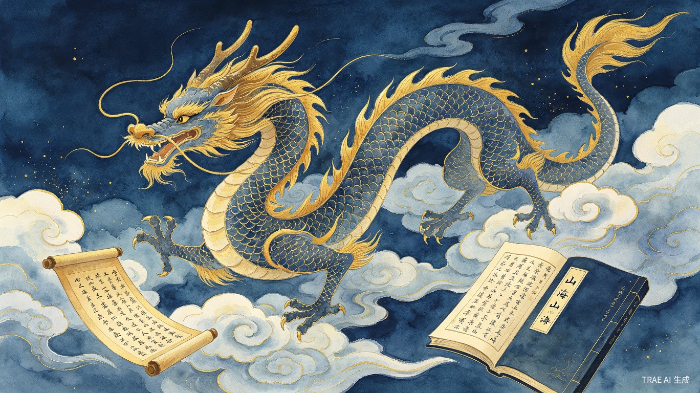

🎨 创意介绍
| 创意名称 | 神兽天气龙 |
| 主赛道 | 生活娱乐 |
| 附加赛题 | 社会公益 · 古籍活化工具 |
| 作品类型 | 桌面电子宠物 / 创意互动工具 |
| 技术栈 | Electron + SVG + CSS Animation + 和风天气 API |
| 开发工具 | TRAE Work（零代码基础） |
当千年神兽走进你的桌面，天气不再是冷冰冰的数字，而是一条会呼吸、有情绪、能陪伴你的小龙。
想解决什么问题
天气预报 App 虽然功能强大，但交互冰冷、缺乏情感连接。每天"查天气"是一个机械操作——打开 App、看数字、关掉。同时，年轻人对中国传统神话（山海经、神兽文化）有兴趣，但缺乏轻松有趣的了解渠道。桌面宠物类产品市场长期空白，用户缺少一个有趣的桌面陪伴。
为什么会想到做这个
中国神话中的龙是"呼风唤雨"的神兽，天然与天气主题契合。将传统神兽形象与现代桌面宠物结合，既是对传统文化的活化传承，也是对 AI 时代人机交互方式的一种有趣探索。作为零基础用户，用 TRAE Work 就能做出一个完整产品，正是"人人都是创造者"的最好体现。
大概是什么产品
一款 Windows 桌面电子宠物应用。透明悬浮窗口，一条可爱的中国龙趴在你的桌面上，它会根据实时天气自动变换颜色、特效和情绪——晴天喷火、雨天滴水、雪天结冰、雷暴放电。点击龙还能查看神兽的古籍介绍和文化典故（如《山海经》中的应龙、《说文解字》中的虬龙等），让电子宠物成为传播传统文化的小窗口。
⚡ 核心功能
🌦 天气特效系统
龙作为"呼风唤雨"的神兽，会根据 6 种天气展现完全不同的视觉形态：

📜 神兽文化百科
点击龙可以查看神兽的详细介绍，每一条介绍都源自中国古典典籍，让电子宠物成为传播传统文化的小窗口。

🦁 应龙
上古神龙，曾助黄帝斩杀蚩尤与夸父，以尾画地成江。蓄水行雨，是降雨之祖。
🦁 虬龙
有角的小龙，常潜伏深渊。古人云"虬龙潜深渊"，象征蛰伏待时的力量。
🦁 腾蛇
神话中能腾云驾雾的蛇，常与龙并称。"腾蛇乘雾，终为土灰"，寓意无常。
🦁 螭龙
无角的龙，古代建筑与器物上常见其形象，寓意守护与祥瑞。
未来计划：扩展更多神兽（凤凰、麒麟、白泽、饕餮等），每种神兽对应不同的天气属性，打造"神兽天气图鉴"。
👥 目标用户与场景
面向哪些用户
- 上班族：长时间使用电脑，希望在桌面有一个有趣的陪伴
- 学生党：喜欢新奇有趣的桌面小工具，同时对传统文化感兴趣
- 文化爱好者：对中国神话、山海经等传统文化有热情
- 桌面宠物玩家：曾经喜欢电子鸡、桌面狗等经典桌面宠物的用户
使用场景
- 每天打开电脑，桌面上的龙告诉你今天天气如何、该怎么穿衣
- 工作时瞥一眼桌角的小龙，看到它在雨天的"水滴"特效，会心一笑
- 无聊时点击龙，翻看神兽故事，了解《山海经》中的奇妙世界
- 朋友看到你的桌面宠物，觉得有趣也想试试
当前痛点
- 天气预报 App 交互冰冷，缺乏情感连接
- 年轻人对传统文化（山海经、神兽）有兴趣但缺乏轻松的了解渠道
- 桌面宠物类产品稀缺，市场存在空白
✨ 价值与意义
用 AI 工具零代码开发，让传统文化以最轻松的方式走进日常生活。
生活娱乐价值（主赛道）
将"查天气"变成有趣的陪伴体验。龙不只是显示温度，它会呼吸、会表达情绪、会跟你说"今天下雨啦，记得带伞"——让冰冷的天气数据变得有温度。桌面宠物填补了市场空白，为用户的日常工作增添一份趣味。
古籍活化价值（附加赛题 · 社会公益）
中国龙是"呼风唤雨"的神兽，与天气主题天然契合。通过电子宠物这一年轻人喜闻乐见的形式，让《山海经》《说文解字》等古籍中的神兽知识以轻松有趣的方式传播。点击龙即可查看应龙、虬龙、腾蛇、螭龙等神兽的古籍原文出处和文化典故，实现"古籍活化"的公益目标。
技术启蒙价值
本项目完全使用 TRAE Work 辅助开发，开发者为零基础。这证明了"人人都是创造者"——只要有想法，AI 就能帮你把创意变成可运行的产品。
🛠 技术实现
技术亮点
- 纯 SVG 龙形绘制：所有龙的形象使用 SVG 路径手绘，支持无损缩放，颜色通过 CSS 变量动态切换
- CSS 动画驱动：呼吸、翅膀扇动、尾巴摇摆、眨眼等动画全部用 CSS keyframes 实现，性能优异
- 粒子特效系统：雨滴、雪花、阳光、闪电、雾气等天气粒子通过 JS 动态生成 DOM 元素实现
- 透明悬浮窗：Electron transparent + frameless window，实现桌面宠物效果
- 零代码开发：全程使用 TRAE Work 对话式开发，验证了 AI 辅助零基础创作的可行性
🚀 未来规划
- 更多神兽：加入凤凰（火）、麒麟（晴）、白泽（雾）等，每种神兽对应不同天气属性
- 互动玩法：喂食、抚摸、小游戏等互动功能，提升陪伴感
- 成长系统：龙的等级随使用天数提升，解锁新外观和新神兽
- 穿衣提醒：根据温度和天气给出穿衣建议
- 社区分享：用户可以分享自己龙的状态截图到社交平台